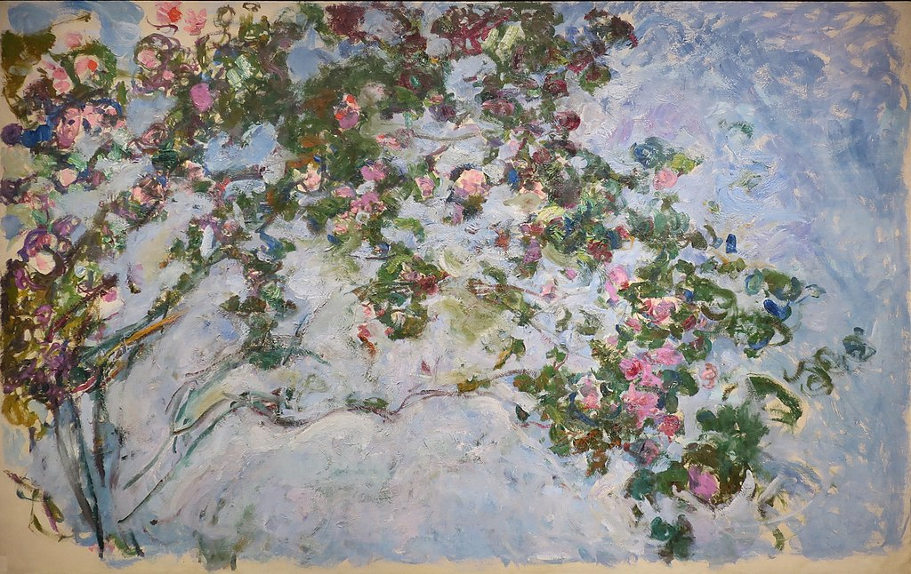

<head>
<meta charset="UTF-8" />
<meta name="keywords" content="drawing, painting" />
<meta name="description" content="drawings by Sunjy" />
<title>Sunjy</title>
<link rel="shortcut icon" type="image/x-icon" href="../../mImages/mCommon/favicon.ico" media="screen" />
<link rel="stylesheet" type="text/css" href="../../mCsses/mCommon/mCssA.css" />
<link rel="stylesheet" type="text/css" href="../../mCsses/mCommon/mCssB.css" />
<link rel="stylesheet" type="text/css" href="../../mCsses/mCommon/mCssC.css" />
<link rel="stylesheet" type="text/css" href="../../mCsses/mCommon/mCssD.css" />
<link rel="stylesheet" type="text/css" href="../../mCsses/mContent/mCssA.css" />
<link rel="stylesheet" type="text/css" href="../../mCsses/mContent/mCssB.css" />
<link rel="stylesheet" type="text/css" href="../../mCsses/mContent/mCssC.css" />
<link rel="stylesheet" type="text/css" href="../../mCsses/mContent/mCssD.css" />
</head>
<script type="text/javascript" src="../../mScripts/mContent/mContentAA.js" /></script>
<script type="text/javascript" src="../../mScripts/mContent/mContentAB.js" /></script>
<script type="text/javascript" src="../../mScripts/mContent/mContentAC.js" /></script>
<script type="text/javascript" src="../../mScripts/mContent/mContentAD.js" /></script>
<script type="text/javascript"></script> 
<script type="text/javascript">
document.write('<div class="mImgAbsolute"></div>');
/*
document.write('<p class="mFontSizeBColor" />From a white paper...</p>');
document.write('<table class="center"><tr><td>');
document.write('');
document.write('</td></tr></table>');
*/
</script>


<script type="text/javascript">
document.write('<p class="mFontSizeBColor" />Roses</p>');
document.write('<p class="mFontSizeSColor" />Roses by Claude Monet are similar to the Monet french shrub rose which produces large blooms all over the bush. Each flower has different swirls of darker and lighter slashes of pink and cream.<br><br>Also, the Claude Monet Hybrid Tea Bush Rose is a beautiful, healthy, growing Hybrid Tea rose that produces blooms with striped roses with streaks of red, yellow, and white.<br><br>This french rose is bred by Delbard and has a pleasant perfume and has been named after Claude Monet.<br></p>');
document.write('<table class="center" /><tr><td>');
document.write('<br>Also, the Claude Monet Hybrid Tea Bush Rose is a beautiful, healthy, growing Hybrid Tea rose that produces blooms with striped roses with streaks of red, yellow, and white.<br><br>This french rose is bred by Delbard and has a pleasant perfume and has been named after Claude Monet.<br>" />');
document.write('</td></tr></table>');
</script>


